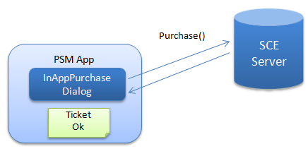

This document provides an explanation regarding In-App Purchase.
Contents
In-App Purchase is the mechanism for the end user to purchase paid content (hereafter "products") in a PSM application.
A product is the content purchased by the end user for a fee.
Product examples: recovery drinks and other herb items, virtual money in games, rights to upgrade a trial application to a full version, wallpaper, additional stages, and additional characters.
There are normal and consumable type products.
- Normal type products are purchased once and cannot be consumed.
- Consumable type products can be consumed. They can be purchased any number of times.
A ticket is the product usage right obtained by the end user at the time of purchase. Tickets are retained in the PSM application as software data.
The end user purchases a product as shown below.
Open the sample "sample/Services/InAppPurchaseSample2".
Select the product.

Decide on and purchase product.

The program processing of In-App Purchase is performed using the InAppPurchaseDialog class.
The following explains the processing flow.
- Create an instance of the InAppPurchaseDialog class.
When an instance is created, the product label and name (mentioned below) described in the metadata app.info (app.xml) are read to the instance.

Figure 1
Use InAppPurchaseDialog.GetProductInfo() to obtain the price and other product information from our server.

Figure 2
Use InAppPurchaseDialog.GetTicketInfo() to obtain purchased ticket information from our server.

Figure 3
Use InAppPurchaseDialog.Purchase() to purchase a specified product.
When a product is purchased, the ticket corresponding to the product is approved (Ok), and that product can then be used.
Figure 4
- For a consumable type product, use InAppPurchaseDialog.Consume() to consume the specified product.
The usage status of the consumable type product is retained in the ticket as a value.

Figure 5
Use the following procedure to implement In-App Purchase in a PSM application.
First, create the product data with Publishing Utility.
- Start Publishing Utility by selecting [Start menu] - [All Programs] - [PlayStation Mobile] - [Publishing Utility].
For product data settings, refer to Using Publishing Utility.
Set the price with DevPortal explained later, not with the Publishing Utility.

- Save the edited app.xml.
app.xml<purchase> <product_list> <product label="SWD001" type="normal"> <name> <localized_item locale="en-US" value="sword" /> <localized_item locale="ja-JP" value="刀" /> </name> </product> <product label="MONY01" type="consumable"> <name> <localized_item locale="en-US" value="100gold" /> <localized_item locale="ja-JP" value="金１００" /> </name> </product> </product_list> </purchase>When the project is being built, app.xml is converted automatically to app.info.
Implement billing processing while referring to samples "sample/Services/InAppPurchaseSample" and "sample/Services/InAppPurchaseSample2".
Create a master package and submit it to SCE.
For creating a master package, refer to Overview of Creating and Submitting a Master.
Access DevPortal on the SCE website and set the product price.
The purchase flow of a normal product - for example, an item when purchased once can be used any number of times thereafter -can be implemented as follows.

- Prepare a scene for In-App Purchase.
- Move to the In-App Purchase scene according to user operation.
- Only access the In-App Purchase dialog from the In-App Purchase scene.
- Make item usable when purchase is confirmed or when purchase processing succeeds.
- When an error occurs, display the error and move to the previous scene.
This method has the following merits.
- Management of the In-App Purchase dialog can be easily implemented.
- When an error occurs, a retry can be easily carried out by user operation.
- Purchased item can be used on a different device as long as a network connection is established.
The following points must be noted.
- Even when using a purchased item, network access is required.
- When a network connection cannot be established, a purchased item cannot be used.
To enable use of a purchased item when a network connection cannot be established, it is recommended that the purchased item be implemented using save data.

- Store purchased item information in save data.
- Use a unique ID and encrypt save data.
Unauthorized copying can be prevented to a certain extent by encrypting save data. The unique ID can be obtained from account information (Sce.PlayStation.Core.Services AccountInformation).
The purchase flow of a consumable type product - for example, coins that can be purchased any number of times and be used for the number of times purchases were made - can be implemented as follows.

- In the same manner as a normal type product, prepare a scene for In-App Purchase.
- Move to the In-App Purchase scene according to user operation.
- Only access the In-App Purchase dialog from the In-App Purchase scene.
- Execute Purchase and Consume and increase number of coins when they succeed.
- When an error occurs, display the error and move to the previous scene.
Save data must be used in this method.
- Store purchased coins information in save data.
- Use a unique ID and encrypt save data.
The following points must be noted.
- Unlike a normal type product, purchased coins cannot be used on another device.
- Purchase and Consume must be executed and error processing is rather complex.
In the development environment, errors of In-App Purchase can be simulated. Use the "OK", "Cancel", and "Error" buttons within the In-App Purchase dialog to check there is no problem with the application's behavior.
Be especially careful of error handling in the following cases.
- When a network error occurs and the network does not recover for a long time.
- When a network error occurred but server processing succeeded.
In the case when the network does not recover for a long time, if automatic retry for In-App Purchase is executed, it may become impossible to continue with the application. Thus, it is recommended that a retry be executed according to user operation.
Moreover, when a network error occurs, the success/failure of server processing may become uncertain. For a normal type product, information can be correctly updated as soon as the network recovers; however, for a consumable product, a comparison may be required of the states before and after the purchase processing. Therefore, it is favorable to store the ticket state during purchase processing in save data. This case can be simulated by the "Abort" button on the In-App Purchase dialog on the PC simulator.
Make notification of product information and purchase results as clear as possible to the user.
- Information regarding the product list
- Information regarding product content
- Purchased/Not purchased display for each product
- Advance notice to start purchase
- Result display when purchase succeeds
- Error display when purchase fails